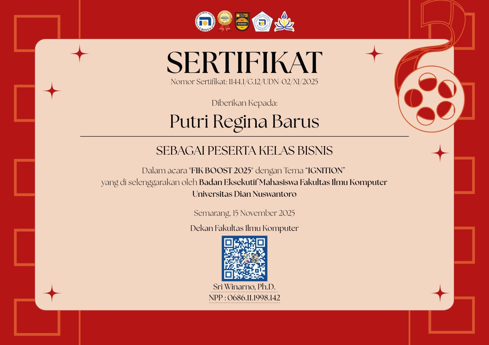

💛
Cerita Menyentuh
Alur yang emosional dan karakter yang mudah dikenang.
Mahasiswa Sistem Informasi
Selamat datang di website pribadi saya. Website ini dibuat untuk memperkenalkan profil, pendidikan, pengalaman, dan kegiatan yang saya lakukan. Melalui website ini, pengunjung dapat mengenal saya lebih dekat.
Hubungi SayaNama saya Putri Regina Barus. Saya memiliki minat dalam bidang teknologi informasi, khususnya pemrograman web, sistem informasi, dan pengembangan basis data. Saya senang mempelajari teknologi baru dan berbagi pengetahuan dengan orang lain.
Salah satu minat saya adalah mempelajari pemrograman web. Dalam pengembangan website, HTML digunakan untuk menyusun struktur halaman, CSS untuk mengatur tampilan, dan Bootstrap untuk membantu membuat desain yang responsif.
Selain itu, saya tertarik pada pengembangan aplikasi yang mudah digunakan, memiliki tampilan menarik, dan dapat diakses melalui berbagai perangkat, seperti komputer, tablet, dan telepon seluler.
Di luar dunia pemrograman, hobi saya adalah menonton drama Korea. Bagi saya, drakor bukan sekadar hiburan. Alur ceritanya yang rapi, emosi yang kuat, sinematografi yang indah, dan pesan moral di setiap episodenya sering membuat saya terinspirasi. Menonton drakor juga menjadi cara saya melepas penat setelah belajar dan mengerjakan tugas.
Dari drakor, saya juga belajar tentang kerja keras, persahabatan, keluarga, dan pantang menyerah, nilai-nilai yang bisa saya terapkan dalam kehidupan sehari-hari maupun dalam belajar teknologi informasi.
Alur yang emosional dan karakter yang mudah dikenang.
Sinematografi, lokasi, dan musik latar yang memanjakan mata dan telinga.
Banyak pelajaran hidup tentang kerja keras dan pantang menyerah.
Belajar bisa serius, tetapi istirahat dengan nonton drakor juga penting.
Karna mengejar mimpi adalah prioritas, menikmati cerita adalah cara mengisi energi.
Pendidikan merupakan bagian penting dalam meningkatkan pengetahuan dan keterampilan. Melalui pendidikan, seseorang dapat mengembangkan kemampuan berpikir, kreativitas, serta menyelesaikan berbagai permasalahan.
| No | Jenjang | Institusi | Periode | |
|---|---|---|---|---|
| Masuk | Lulus | |||
| 1 | SMP | SMP Negeri 1 Teluk Mengkudu | 2019 | 2021 |
| 2 | SMA/SMK | SMA Negeri 1 Teluk Mengkudu | 2021 | 2023 |
| 3 | S1 Sistem Informasi | Universitas Dian Nuswantoro | 2025 | Sekarang |
Saya terus berusaha mengembangkan kemampuan melalui kegiatan belajar, membaca referensi, melakukan praktik pemrograman, dan mengikuti perkembangan teknologi informasi.
Berikut pengalaman organisasi dan proyek yang pernah saya ikuti.
Himpunan Mahasiswa Sistem Informasi | 2025 - sekarang
Tugas Mata Kuliah Pemrograman Web | 2026
Berikut kegiatan dan prestasi yang saya peroleh.
| No | Nama Kegiatan | Peran | Tahun |
|---|---|---|---|
| 1 | Seminar Nasional Kepolisian | Peserta | 2026 |
| 2 | Pembekalan Calon Pengurus Himpunan Mahasiswa | Peserta | 2026 |
| 3 | Pelatihan Anggota Paskibra | Anggota | 2025 |
| 4 | Skill Boost | Peserta | 2025 |
Klik gambar sertifikat untuk melihat ukuran penuh.



Silakan tinggalkan kritik dan saran agar website ini menjadi lebih baik.
Demikian perkenalan singkat tentang diri saya. Semoga website ini dapat memberikan informasi yang bermanfaat bagi pengunjung. Terima kasih telah mengunjungi website saya.